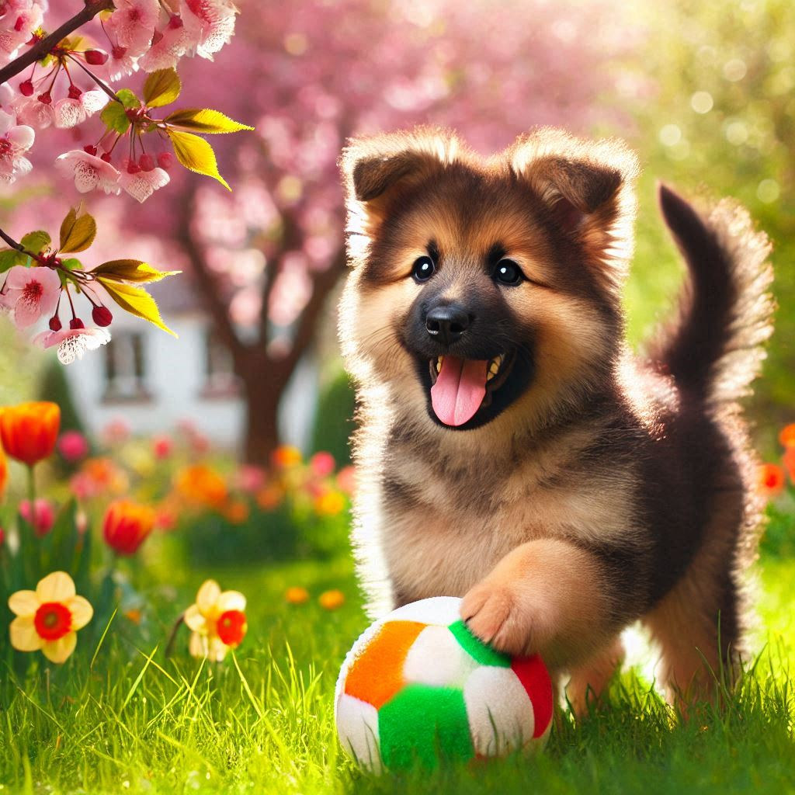

About Tuffy
Tuffy is a lovable and curious little puppy with a heart of gold. He adores cuddles, exploring his surroundings, and playing with his toys. Tuffy is looking for a kind and caring family to share his boundless love and affection.
- Breed: German Shepherd
- Age: 3 months
- Gender: Male
- Personality: Curious, Affectionate, Playful
- Vaccinated: Yes
- Neutered: No